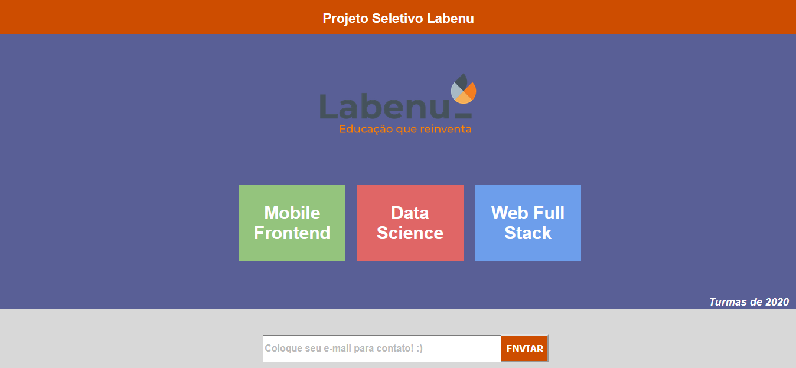
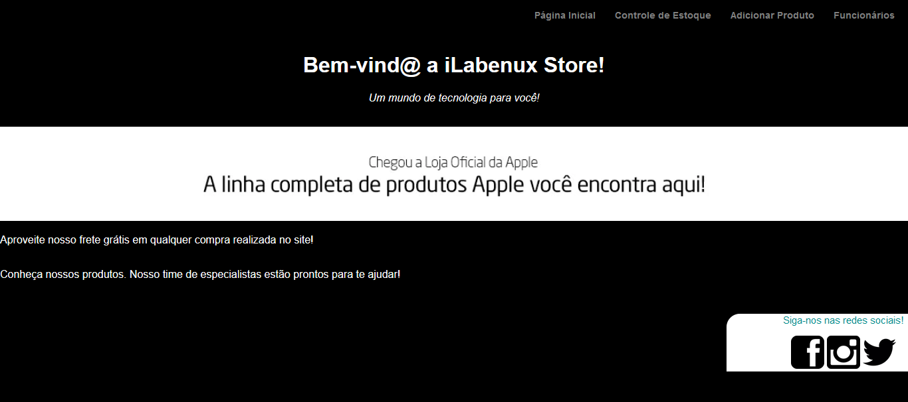

Projetos Realizados

Projeto Seletivo Labenu
- Descrição:
Baseia-se na criação de uma page pré-determinada, afim de testar conhecimentos práticos.
- Tecnologias Utilizadas:
Para este projeto foi necessário a utilização de HTML + CSS + JavaScript.

iLabenux Store
- Descrição:
Foi solicitada a criação de uma lojinha virtual padronizada conforme especificações pessoais.
- Tecnologias Utilizadas:
Para este projeto foi necessário apenas a utilização do kit básico HTML + CSS.